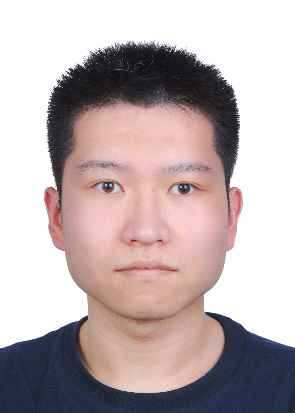

Qian Gao
PhD Candidate, School of Electronic Engineering and Computer Science (EECS), Queen Mary University of London (QMUL).
Research: Integrated Sensing and Communication (ISAC), Reinforcement Learning, WiFi Human Sensing.
ISAC
Beamforming
Reinforcement Learning
UAV-enabled ISAC
WiFi Human Sensing
ELAA
Google Scholar
· q.gao@qmul.ac.uk
· CV (PDF)
Affiliation
School of EECS, QMUL, London E1 4NS, UK
Supervisor: Prof. Yuanwei Liu (Fellow, IEEE)
Focus
Learning-based beamforming / antenna selection for ISAC systems, including pinching antenna and ELAA deployments, with transferable low-complexity designs.
Selected Publications
Distributed Antenna Selection and Beamforming for ELAA based Downlink ISAC Systems
Q. Gao, R. Zhong, X. Mu, M. Peng, H. Shin, Y. Liu · IEEE Transactions on Vehicular Technology · Early Access · 2025
MARL-Based UAV Trajectory and Beamforming Optimization for ISAC System
Q. Gao, R. Zhong, H. Shin, Y. Liu · IEEE Internet of Things Journal · 2024
AutoSen: Improving Automatic WiFi Human Sensing through Cross-Modal Autoencoder
Q. Gao, Y. Hao, Y. Liu · IEEE ICASSP · 2024
Trajectory and Beamforming Optimization in UAV-enabled ISAC System
Q. Gao, R. Zhong, Y. Liu · IEEE GLOBECOM · 2024
Antenna Selection and Beamforming in ELAA-based ISAC System: A Distributed Approach
Q. Gao, R. Zhong, Y. Liu · IEEE GLOBECOM · 2024
Deep Learning Based Three-Stage Solution for ISAC Beamforming Optimization
Q. Gao, R. Zhong, Y. Liu · IEEE GLOBECOM · Accepted · 2025
Deep Learning based Beamforming Optimization for ISAC Systems: A Low-complexity and Transferable Framework
Q. Gao, R. Zhong, Y. Zou, H. Shin, Y. Liu · IEEE Transactions on Wireless Communications · Major Revision · 2025
RL based Beamforming Optimization for 3D Pinching Antenna assisted ISAC Systems
Q. Gao, R. Zhong, Y. Zou, H. Shin, Y. Liu · IEEE Transactions on Vehicular Technology · Under Review · 2025
Awards
QMUL Postgraduate Research Fund (PGRF) · 2024
QMUL-CSC Joint Scholarship · 2022
Outstanding Graduate of BUPT · 2022
National Scholarship for Graduate Students · 2021
Excellent Oral Presentation Award · ICCT · 2021
iTeach Competition, National First Prize · 2020
China Graduate Mathematical Modeling, National Third Prize · 2020